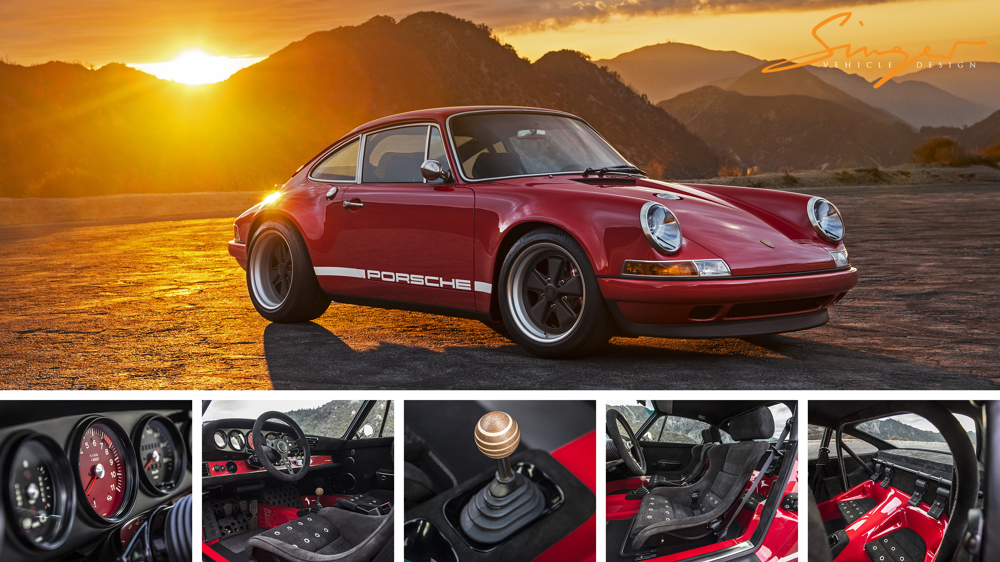

Kőszegi Vajk vagyok, másodéves hallgató a Budapesti Corvinus Egyetemen. Jelenleg az egyetem mellet az evosoftnál dolgozom, mint szoftvertesztelő gyakornok. Ez a tárgy különösképpen hasznos lesz nekem (illetve látom a hasznosságát, mert a munkahelyen is a gitet hasznájuk vc-nek), mert a csapatunk egy webservert fejleszt.
12 évet fociztam, bár miután felvettek az egyetemre abba hagytam. Szabadídömben szeretek sorozatot nézni, könyvet olvasni és számítogépes játékokkal játszani. (Újfent felfedeztem a Skyrimet, szóval jelenleg azt nyüstölöm).
Kedvenc ételeim
Kedvenc játékaim